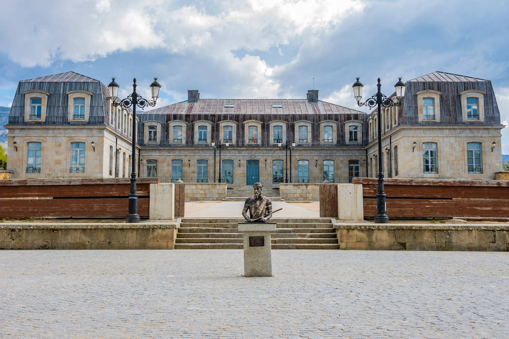
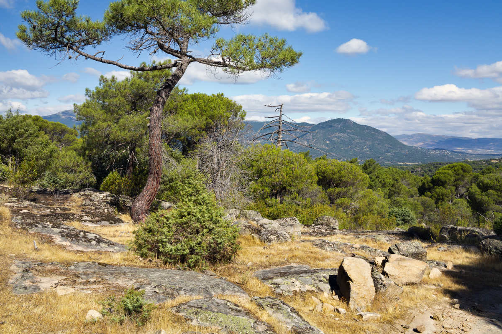
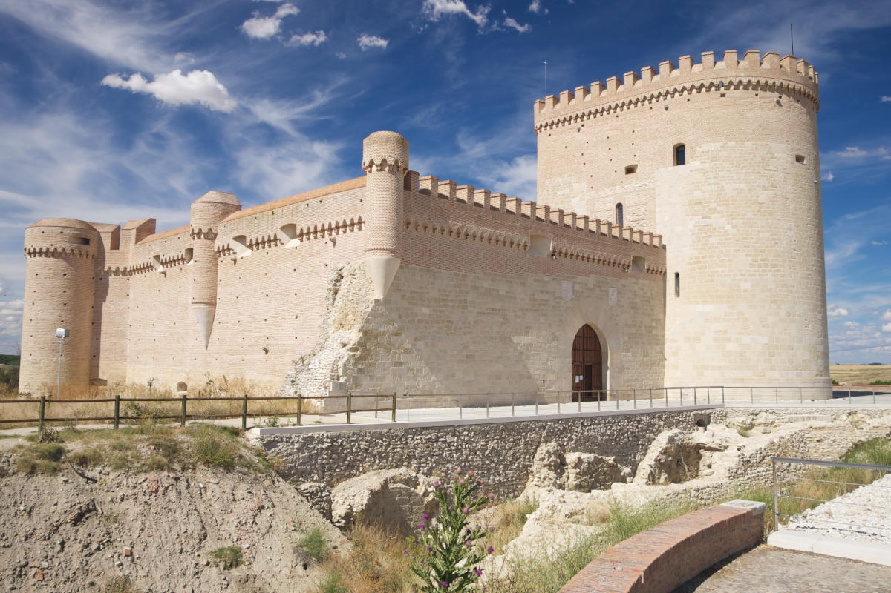
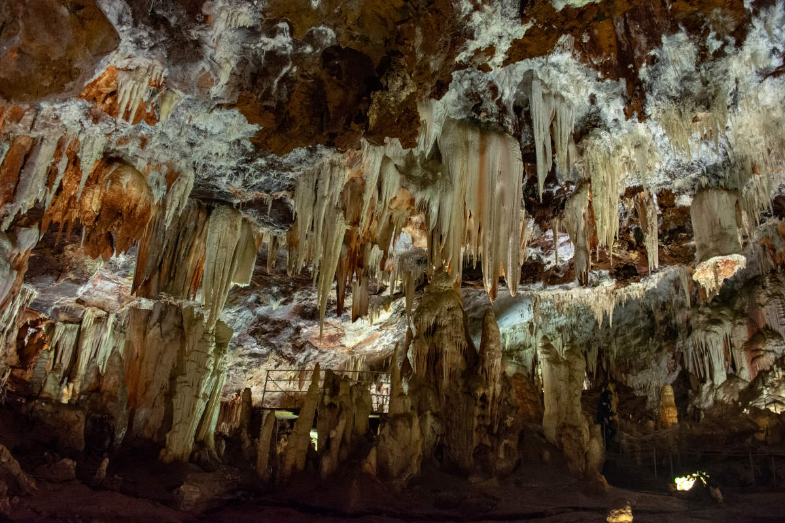
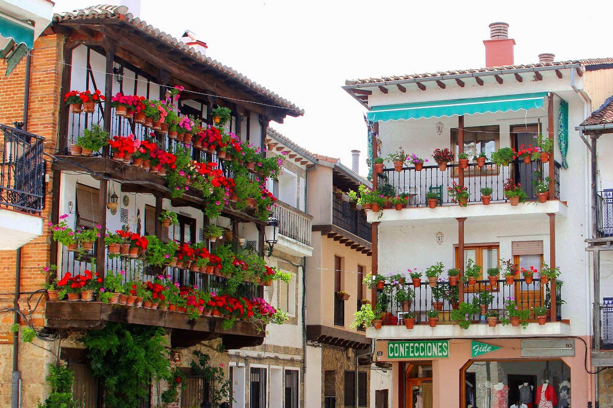
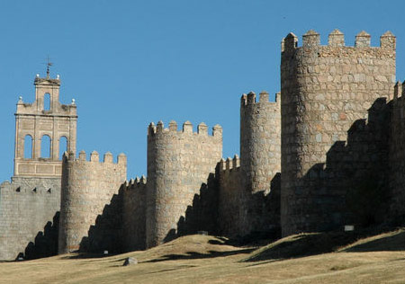

La ubicación geográfica de Ávila
Ávila se encuentra ubicado a 111 kilómetros al noroeste de Madrid, la capital de España.
Las coordenadas geográficas de Ávila son 40 ° 39 0 "N, 4 ° 41 '0" W. Situada en el sureste de Castilla y león, teniendo Salamanca al oeste, Segovia al noreste y Valladolid al norte, tambien limita con las provincias de Madrid, Toledo (Castilla-La Mancha) y Cáceres (Extremadura).
Ávila de los Caballeros, nombre honorífico de la ciudad, es también la capital de la región del mismo nombre y ahora es parte de la Comunidad Autónoma de Castilla y León, España.
Situada a 1.182 metros de altitud, en un enclave rocoso a la orilla derecha del Adaja, un afluente del Douro (Duero en español). La región de Ávila abarca 231,9 km². Se encuentra situada junto al curso del rio Adaja y se trata de la provincia más alta de España sobre el nivel del mar, por lo que son frecuentes las nevadas durante el invierno.
La ciudad presenta un clima mediterráneo continentalizado con matices montañosos.
Debido a esta ubicación el clima de Ávila es extremo con inviernos fríos y largos, y veranos calurosos.
Localidades Principales
Las localidades principales de Ávila son varias, en este caso se van a mencionar 5:
Piedrahita:

Con uno de los monumentos más importantes de la provincia, cuenta con el Palacio de los duques de Alba, se puede contemplar la fachada de este palacete, también se puede conocer la iglesia de Santa maría la mayor, la plaza de toros, o las ruinas del convento de Santo Domingo
Guisando:

Declarado conjunto Histórico Artístico, es el típico pueblo de postal. Debido a su cercanía con las montañas se pueden realizar rutas de senderismo y otras actividades en el Parque regional de la Sierra de Gredos. Así describió Camilo José Cela este pueblo “Guisando es caserío blanco como la paloma y sosegado igual que el agua de la fuente clara”.
Arévalo:

Lugar en el que la monarca Isabel la católica paso su infancia, aunque es un lugar con un pasado musulmán, como las torres del estilo mudéjar de la iglesia de San Martin, la fachada del ayuntamiento o la plaza de la Villa.
Arenas de San Pedro:

Con un castillo de Condestable Dávalos, con unos orígenes en el siglo XIV, y unas vistas del rio Arenal desde el puente medieval. En el subsuelo se encuentran las cuevas del Águila, uno de los lugares más bonitos de Ávila.
Candelada:

El valle del Tiétar es el refugio del pueblo de Candelada. Su principal atractivo son sus casas donde aparecen vigas y balcones de madera. También la casa de las flores que se ubica en su plaza mayor, un edificio que data de finales del siglo XIX, y llama la atención por la sobrecargada decoración floral. Dentro se encuentra el Museo del Juguete de Hojalata, donde se exhiben más de 2000 piezas de antiguos muñecos.
La ciudad medieval se asienta, a 1131 de altitud, sobre un promontorio granítico que forma parte de las estribaciones meridionales de la Sierra de Ávila o del reborde que cierra, por el E, el Valle Amblés, ámbito geográfico determinado por el mediodía por las Parameras, y por el N, por la referida Sierra de Ávila. El valle es surcado longitudinalmente (O-E) por el río Adaja, curso fluvial que, encajonado y en su discurrir hacia el Duero, contornea por el poniente la estribación granítica en que se localiza la ciudad; al mediodía del caserío el río Chico desemboca en el Adaja.
Formando parte de la Sierra de Gredos, la Sierra de Ávila constituye el escalón de menor altitud y más septentrional del Sistema Central dentro de la provincia de Ávila. De culminaciones planas y sin que se produzca una fuerte ruptura de pendiente, individualiza el Valle Amblés de la llanura sedimentaria de La Moraña.
La ciudad está completamente condicionada por la geografía. La muralla medieval se levanta sobre una crestería granítica, adaptándose a la propia orografía del terreno y desarrollando una planta de cuadrilátero irregular, casi un rectángulo, orientado longitudinalmente y volcada hacia el río Adaja. Ésta es la planta más acertada y casi la única posible que la topografía permitía, reuniendo el diseño más adecuado para la defensa de la porción de terreno que circunda.
Historia
Historia de Ávila
Ávila, con acento en la Á es la forma correcta de escribir su nombre en español. Puede haber sido la antigua ciudad conocida como Abula, mencionado por Ptolomeo en su Geographia (II 6, 60) que se encuentra en la región de Bastetania Ibérica.
Abula se menciona como una de las primeras ciudades en Hispania que fue cristianizada, concretamente por San Segundo. Sin embargo, Ávila puede haber sido la antigua Obila, mientras que Abula puede haber sido el pueblo de Abla

Prehistoria y romanos
Monumento conocido como "Los Cuatro Postes"
Restos romanos junto a la Puerta de San Vicente.El nombre de la ciudad viene de los distintos pueblos y tribus que han vivido a lo largo de milenios en la provincia. Los primeros fueron los vetones, que la llamaron Óbila (monte alto), siendo uno de los castros más importantes de esta tribu, junto con Sanchorreja, Berrueco, Mesa de Miranda, Las Cogotas, El Raso y Ulaca. Los vetones dejaron vestigios por toda la geografía de la provincia de Ávila, especialmente en forma de verracos. Más tarde la poblaron los romanos, dándole el nombre de Abila o Abela. Los romanos dejaron también su marca en la ciudad, que consistía por entonces en el actual casco viejo, la parte rodeada por las murallas. Calzadas, mosaicos o la plaza del Mercado Grande, o El Grande, son parte de los vestigios romanos que quedan.
El interior de la ciudad aún mantiene el trazado típico de las ciudades romanas tipo hiberna (castros estables), de contorno rectangular, con dos calles principales (cardo y decumano) que se cortan ortogonalmente en el centro donde estaba el foro. Actualmente este trazado aparece sólo parcialmente modificado, reconociéndose fácilmente antiguas entradas romanas en las puertas de San Vicente y Gonzalo Dávila, donde los cubos defensivos originales fueron conglobados en la muralla medieval. También se mantienen las manzanas cuadrilongas recuerdo de las insulae romanas. El Cardo máximo corresponde a la actual Calle de Vallespín; mientras que el Decumano máximo lo constituirían la Calle de los Caballeros y la Calle de Bracamonte. Todas ellas confluyen en el «Mercado Chico» que fue el antiguo foro. Por su parte, la necrópolis romana estaba al este, más allá de la Calle de San Segundo, de modo que en toda esa parte de la muralla se pueden observar piezas funerarias reaprovechadas como materiales de construcción: estelas, aras, cipos, «verraquitos» y cápsulas cinerarias de granito, incrustados en los lienzos del muro oriental.
Aparte de los restos arquitectónicos, hay numerosos restos cerámicos, monedas y otros objetos arqueológicos representativos de la vida cotidiana en la Antigüedad.
Visigodos
Los primeros asentamientos visigodos en la península se consideraban geográficamente muy cerrados. Según Palol y sus estudios, los asentamientos visigodos en España comprenden las ciudades de Burgos, Soria, Guadalajara, Toledo, Ávila, Cáceres, Madrid y Palencia, lo que induce a pensar que la elección de estos asentamientos es estratégica. Aunque su ubicación concreta no está determinado en la ciudad de Ávila se sabe que fue una de las plazas fuertes de la época visigoda. Durante los siglos VI y VII no hubo conflictos en la ciudad.
Los visigodos utilizaban la tierra para cultivos de cereal y ganadería, según las pizarras encontradas sobre todo en el municipio de Diego Álvaro. La importancia de Ávila en este periodo se debe a un carácter religioso según la documentación que detalla la intervención de los prelados de Abela en los concilios toledanos.
Arqueología
Corrobora el devenir visigodo en Ávila el templo de Santa María de la Antigua. Las crónicas registran que este monasterio fue fundado antes del año 687, siendo monasterio mixto (para ambos sexos) hasta la llegada de los árabes. Su importancia era tal que se cita como el lugar donde murió Santa Leocadia, hija del Rey Wamba. En esta iglesia estaría enterrado también el duque Severiano, un noble visigodo.
Edad Media
Invasión musulmana
No se puede precisar por falta de datos las circunstancias y vicisitudes durante la etapa de dominación musulmana ni tampoco concretar la relación social, económica, cultural, política y religiosa que pudieran tener esta creencia en Ávila. Lo único que parece seguro es que durante los primeros años de la invasión musulmana la ciudad se convirtió en un punto estratégico, siempre deseada por árabes y cristianos como enclave defensivo, y los enfrentamientos por su posesión fueron permanentes. Hubo incursiones de los reyes cristianos en la ciudad después de la ocupación musulmana pero no llegaron a asentarse. Alfonso I y su hijo Fruela llevaron a cabo varias expediciones llegando a entrar en la ciudad (740-742) sin ánimo de permanecer, más bien con intención de destruir las defensas, recaudar botín y a la vez, aprovechando que los pobladores cristianos de la ciudad seguían al rey en su repliegue, obtenían pobladores para las tierras ocupadas y guerreros para la defensa de los reinos cristianos.
Tras estas incursiones, se suceden en Ávila tres siglos de los que se conocen pocos aconteceres. Ávila, como otras poblaciones de la meseta, debido a que queda en tierra de nadie, sujeta a las sucesivas expediciones de unos y otros, con la consiguiente destrucción de campos y poblaciones, quedó prácticamente despoblada. Desde el siglo VIII estas zonas o ciudades pueden considerarse dentro del llamado "desierto estratégico" en el que hubo un fuerte despoblamiento, convirtiéndose a su vez en tierra de nadie y siendo escenario de las correrías de ambas fuerzas.
Reconquista
Flanco noroeste de las Murallas de Ávila. En el siglo XI Don Raimundo de Borgoña, yerno de Alfonso VI de Castilla fue el encargado de la repoblación del centro de la península, y con el fin de proteger Toledo surgen las ciudades amuralladas de Salamanca, Ávila y Segovia. Más tarde la repoblación de la península se va llevando más al sur dejando a Ávila en un segundo plano casi sin relevancia en la época, aunque envía procuradores a las Cortes castellanas.
En la baja Edad Media (siglo XV y XVI) la ciudad vuelve a renacer gracias a las idas y venidas de la corte. La ciudad y la provincia prosperaron enormemente y fueron el lugar de nacimiento de numerosos personajes religiosos, escritores y consejeros espirituales como Santa Teresa de Cepeda y Ahumada en la capital y San Juan de la Cruz en la provincia (Fontiveros).
Guerras Civiles castellanas
Durante la guerra civil castellana fue sede de los partidarios del infante Alonso. Su concejo fue uno de los principales organizadores de la Guerra de las Comunidades y en ella se formó la primera junta de los comuneros.
A partir del siglo XVII la ciudad empieza una larga decadencia y una despoblación que la dejó con apenas 4.000 habitantes, empezando una lenta recuperación en el siglo XIX, con la construcción del ferrocarril.
El siglo XX
El proceso de desarrollo e intensa urbanización que se inicia en el siglo XX han conducido a la ciudad a un segundo plano de la realidad española. Las primeras décadas del siglo han mostrado asimismo un cierta tendencia de la ciudad a preservar sus tradiciones frente a los cambios sociales que se habrían de producir necesariamente en todo el país.
En 1936 tras el estallido la Guerra Civil, la ciudad enseguida pasa a formar parte de la zona ocupada por las tropas sublevadas, no produciéndose acontecimientos históricos de relevancia.
Durante la dictadura franquista se intensifica el proceso de despoblación de la provincia que ha de afectar necesariamente a la ciudad.
Tras la Guerra Civil la participación de Ávila en la sociedad española se restringe a pocas acciones, siendo quizá la de más relevancia, pero no por ella la más conocida, la aportación o el apoyo para el lanzamiento de políticos. Ya en el siglo XIX Mariano José de Larra obtuvo un escaño en las Cortes al presentarse por Ávila. Del mismo modo Adolfo Suárez (presidente español durante la Transición y primer presidente de la democracia posterior al Franquismo) realizó parte de su carrera política desde Ávila (nació en el pueblo de Cebreros); en la década siguiente José María Aznar (presidente entre 1996 y 2004) salió elegido diputado en las Cortes por Ávila, pese a no ser abulense. Se puede citar a otros ministros que han comenzado su andadura política desde esta ciudad como Agustín Rodríguez Sahagún, Agustín Díaz de Mera, o Ángel Acebes. Sin embargo estas aportaciones no reflejan en absoluto la influencia real de la ciudad o la provincia en la política española, que es muy inferior a la relevancia de estas personas.
Museos
El principal museo de la ciudad es el Museo de Ávila, inaugurado en 1911. En el año 1968 adquirió identidad de Museo Provincial. Está gestionado por la Junta de Castilla y León desde 1987. El museo consta de dos localizaciones: la Casa de los Deanes, un palacio renacentista del siglo xvi que funciona como sede principal y la iglesia de Santo Tomé, levantada originalmente en el siglo xii, que se utiliza como almacén visitable. Las colecciones se engloban en tres grandes secciones: una representativa de la cultura rural de la provincia, otra que recoge piezas halladas en territorio abulense desde la Prehistoria hasta el siglo xix y finalmente una dedicada exclusivamente a piezas arqueológicas encontradas en excavaciones urbanas de la ciudad de Ávila.
En el interior de la catedral de Ávila, está instalado el museo de la Catedral, que alberga una exposición de arte religioso. En el convento de la Encarnación también existe una exposición permanente, que muestra diversos testimonios históricos de Santa Teresa de Jesús así como diversas piezas de arte religioso. También conserva piezas relativa a la vida y obra de San Juan de la Cruz. En la cripta del convento de Santa Teresa se localiza museo de Santa Teresa, que expone la obra y vida de la santa, así como diversas piezas de arte religioso.
En el interior del monasterio de Santo Tomás se mantienen varios museos, como el de Arte Oriental y el de Ciencias Naturales. El museo de Arte Oriental fue inaugurado en el año 1964, está situado en el tercer claustro del monasterio de Santo Tomás y alberga una colección variada de piezas de Japón, Vietnam, Filipinas y China. El de Ciencias Naturales alberga una colección de ejemplares zoológicos que formaban parte del antiguo gabinete de historia natural de la orden dominicana del monasterio.
La ciudad cuenta así mismo con el museo Caprotti, ubicado en el palacio de Superunda,que alberga la obra del pintor italiano Guido Caprotti, afincado en Ávila desde 1916.
Exposiciones
Existen igualmente diversas salas de exposiciones, como la sala del Agua, la sala del Torreón de los Guzmanes, la sala de la Diputación y la sala del Episcopio. Durante el año 2004 la catedral acogió la exposición Testigos de la fundación «Las Edades del Hombre», con lo mejor del arte sacro castellanoleonés. Esta exposición se prolongó a lo largo de 223 días y recibió un total de 859859 visitantes. Durante el año 2006 se llevó a cabo la exposición «Las dos orillas», conmemoración del V centenario de la muerte de Cristóbal Colón. Durante el verano se puede acceder a visitas nocturnas a la muralla, que son guiadas y teatralizadas los fines de semana. En estas se cuenta parte de la historia de la construcción de las murallas y de la ciudad.
Bibliotecas
La ciudad dispone de cuatro bibliotecas públicas: la biblioteca pública de Ávila —en la plaza de la Catedral—, la biblioteca José Jiménez Lozano —en la avenida de la Inmaculada—, la biblioteca Posada de la Feria —plaza de la Feria— y la biblioteca Olegario González de Cardedal —en la calle Don Jesús Jiménez—.
Cines
Los cines comerciales de la ciudad son las salas de cine «Estrella», en el centro «Comercial el Bulevar», con 6 salas. Durante un tiempo existió el cine conocido como «Tomás Luis de Victoria» situado en la calle Lesquinas. También hay salas en las que se pueden hacer proyecciones, entre otras la del «Auditorio Municipal de San Francisco» y la del «Episcopio».
Fiestas
Las fiestas patronales de Ávila son las de Santa Teresa de Jesús, el 15 de octubre, y San Segundo, el 2 de mayo. Las fiestas de verano de la ciudad tienen lugar durante la segunda quincena de julio. También es patrona de Ávila la virgen de Sonsoles.
La Semana Santa en Ávila es considerada como de Interés Turístico Regional desde el año 1993 y como de Interés Turístico Nacional desde el año 2005. Desde 2014 hasta la actualidad es considerada como de Interés Turístico Internacional.
Ferias y certámenes
Mercado medieval: Durante el fin de semana posterior al primer viernes de septiembre de cada año tiene lugar un mercado medieval en el casco histórico de la ciudad. Se puede disfrutar de una ambientación, espectáculos y gastronomía propias del medievo. El lema bajo el que se celebra de «El mercado de las tres culturas» está referido a las principales culturas que han estado involucradas en la historia de la ciudad: cristiana, judía y musulmana. Durante esta semana parte de la ciudad y muchos de sus habitantes se visten de época y se llevan a cabo pasacalles y espectáculos durante el día y la noche, en distintas zonas temáticas que cuentan con sus respectivas denominaciones: Barrio judío, Zoco árabe, Campamento militar/Arqueros, Mercaderes cristianos, Campamento medieval, Rincón infantil, Episcopio o Cetrería.
Festival de Teatro de Calle y Artes Circenses. Tiene lugar en temporada veraniega y se llevan a cabo distintos espectáculos callejeros, de índole gratuita.
Arteávila. Se trata de un certamen anual de artesanía. Tiene lugar durante el mes de agosto en el paseo del Rastro y es organizado por la Asociación de Artesanías Varias de Ávila (ADAVA).
E Boca. Muestra de vino y productos de la tierra, está promovida por la Asociación de Sumilleres de Ávila (ASA), y en el año 2013 se desarrolló durante el mes de febrero.
Feria del Libro Antiguo y Ocasión. Certamen ferial anual, es organizado por la Asociación del Libro Viejo y Antiguo de Castilla y León (ALVACAL). Tiene lugar en la plaza de Italia o en el paseo del Rastro.
Gastronomía
Son característicos en las mesas abulenses los platos de judías del Barco, el chuletón de Ávila, las patatas revolconas y las yemas de Santa Teresa. También son típicos de la ciudad el hornazo, bollo de pan relleno de chorizo, tocino, lomo y huevo, las mollejas de ternera o el cochinillo (denominado tostón asado), cuchifrito en la capital y al horno en Arévalo.
Yemas de Ávila. Este dulce típico de la ciudad es fabricado en la pastelería tradicional «La Flor de Castilla» con el nombre de «Yemas de Santa Teresa». El resto de pastelerías de la ciudad también lo fabrican pero bajo la denominación genérica de «Yemas de Ávila» o simplemente «Yemas». Se elaboran como su propio nombre indica a partir de la yema de huevo.
Chuletón de Ávila. Se trata de un gran chuletón de ternera a la parrilla y poco hecho. Se puede disfrutar en cualquier punto hostelero de la ciudad. El chuletón es de ternera Avileña, raza autóctona de ejemplares negros y de excelente carne. La carne de Ávila tiene indicación geográfica protegida.
Ávila en la literatura
Dos de las figuras claves en la historia de Ávila son las de los místicos del siglo xvi Santa Teresa de Jesús y San Juan de la Cruz, que pasaron buena parte de su vida en la ciudad y en la que escribieron parte de su obra literaria.
La escritora irlandesa Kate O'Brien escribió numerosas obras en las que abordaba la temática de la ciudad abulense. En Adiós, España (1937) dedicó un capítulo a la ciudad y en su novela Mary Lavalle (1936) también aparecen referencias al paisaje nevado de Ávila en invierno. O'Brien continuaría con las alusiones a la ciudad en su obra Esa Dama (1946) para finalmente en 1951 escribir Teresa de Ávila, una biografía de Santa Teresa de Jesús. Ávila fue lugar de veraneo para la escritora hasta que se desató la Guerra Civil Española. La escritora volvería más tarde a la ciudad, para residir durante medio año, entre 1961 y 1962, en el hotel Jardín.
El escritor novecentista español Alberto Insúa, nacido en Cuba, escribiría sobre la ciudad, escogiéndola como escenario de su novela En tierra de santos (1907).
Enrique Larreta, autor argentino adscrito al Modernismo, incluyó a Ávila en pasajes de su obra La gloria de don Ramiro.
Miguel de Unamuno dedicaría a Ávila un capítulo —titulado Frente a Ávila— de su obra Andanzas y visiones españolas (1902).341 El escritor vallisoletano Miguel Delibes también inspiraría parte de su obra la ciudad, al ambientar su primera novela, La sombra del ciprés es alargada, en la Ávila de posguerra.
Ávila en el cine
Ávila, gracias a su muralla y su aspecto de ciudad medieval, ha sido escenario del rodaje de escenas de un gran número de películas. Entre estas destacan Reina Santa (1947), El caballero negro (1954), Orgullo y pasión (1957), Los viajes de Gulliver (The Three Worlds of Gulliver, 1960), Teresa de Jesús (1961), Golfus de Roma (1966), The Phynx (1970), Las estrellas están verdes (1973), Los señores del acero (1985), Extramuros (1985), Los alegres pícaros (1988), La sombra del ciprés es alargada (1990), El reino de los cielos (2005), Shevernatze, una epopeya marcha atrás (2007), Teresa, el cuerpo de Cristo (2007) o Adolfo Suárez, el presidente (2010).
Naturaleza
Ávila es una ciudad que alberga una gran cantidad de espacios naturales, donde el turismo de montaña y aventura cobra especial relevancia. Hay diferentes sendas y caminos que conducen por los mejores rincones, llevándonos hasta ríos, lagunas y cuevas situadas en un entorno natural envidiable.
Es el sitio ideal para realizar excursiones o hacer deporte, senderismo, escalada, rutas en bici...y un sinfín de posibilidades.
Uno de los lugares recomendados para realizar este tipo de rutas es El Tiemblo, con su camino del Castañar, el cual atraviesa un pequeño bosque en las laderas del la Reserva del Valle de Iruelas.
El término municipal de Ávila se solapa con cuatro zonas de la Red Natura 2000, tres de ellas con la categoría de ZEPA —Zona de Especial Protección para las Aves— y todas ellas propuestas como LIC —Lugar de Importancia Comunitaria—.49
Encinares de la Sierra de Ávila. Espacio natural designado como ZEPA que cuenta con 9495,94 ha de superficie, todas dentro de la provincia de Ávila. Afecta a una pequeña área en el noroeste del municipio de Ávila, cerca de la localidad de Alamedilla del Berrocal. Las formaciones vegetales predominantes son el encinar, con Quercus ilex y Quercus rotundifolia, y los brezales de aliaga. Las especies de aves más importantes son el águila imperial, que contaba con una pareja en 2002, y el águila real, con una pareja en el 2000.
Encinares de los ríos Adaja y Voltoya. Este espacio natural designado como ZEPA, tiene 27 047,93 ha de extensión. La mayor parte del espacio natural se halla en la provincia de Ávila, con una pequeña fracción en la de Segovia. Engloba gran parte del sector norte del municipio de Ávila. El tipo de vegetación predominante es también el encinar, en el que predominan áreas de carrascal de bajo porte, junto con dehesas de Quercus spp. Los ríos Adaja y Voltoya atraviesan el espacio natural. Entre las aves destacan la cigüeña negra —Ciconia nigra—, con una pareja, y el águila imperial, con dos o tres parejas en 2005, además del elanio azul o el búho real.
Campo Azálvaro-Pinares de Peguerinos. Este espacio natural designado como ZEPA, de 28 373,80 ha de extensión, se extiende por las provincias de Ávila y Segovia. Ocupa un área importante del sector noreste del municipio de Ávila. Dentro de él está incluido el embalse de Serones, que represa las aguas del río Voltoya. En lo referente a la vegetación predomina el piorno serrano con bosquetes aislados de especies de porte arbóreo. En 2005 había dos parejas de cigüeña negra y otras dos de águila imperial, además de poblaciones de aguilucho lagunero, águila real, halcón peregrino o cernícalo primilla.
Riberas de la Subcuenca del Río Adaja. Este espacio natural se extiende a lo largo de 1232,58 ha de las provincias de Ávila, Segovia y Valladolid. En la provincia de Ávila afecta de forma parcial a los cursos de los ríos Adaja y Ullaque. En el municipio de Ávila engloba al curso del Adaja y una banda de terreno de 25 m en cada margen del río. Esta zona está formada por el tramo de río que va desde su entrada en el término municipal de Ávila, junto al municipio de El Fresno, hasta el Puente del Adaja, perteneciente al casco urbano de la ciudad.
Tradiciones
Fiestas y Tradiciones de Ávila - Fiestas Abulenses
En Ávila, al igual que en otras muchas provincias o lugares de España, las fiestas también tienen sus raíces en la tradición y están relacionadas casi siempre con los habituales ejes temáticos: lo religioso y lo profano.
El alma de la ciudad. Fiestas patronales
Procesión de San Segundo , patrón de la ciudad
El 2 de mayo se celebra la romería de San Segundo, patrón de la ciudad, conmemorando la traslación de los restos del santo a la catedral de Ávila en 1594.
Interesante ver la imagen que ofrecen los maceros ataviados con trajes de época y con las mazas reales de plata
Romería de la Virgen de Sonsoles
Emplazado a cinco kilómetros de Ávila, en el Santuario de Sonsoles, se venera la imagen de la Virgen que cuenta con más devoción entre los abulenses y los pueblos del Valle Amblés.
El primer domingo de julio se celebra la fiesta del Patronato en el recinto de la ermita; pero las más conocidas y destacadas son las que tienen lugar en Octubre: el primer domingo, la Ofrenda Chica o de la Sierrecilla; el segundo, la Ofrenda Grande o de los pueblos del Valle; el tercero, la Ofrenda de La Colilla.
Procesión de Santa Teresa
El 15 de octubre la ciudad celebra las fiestas en honor de Santa Teresa. Los festejos se inician con la proclamación del pregón de las mismas desde los balcones del Ayuntamiento. Gigantes, cabezudos y tarasca recorren las calles y se hace la ofrenda floral ante una de las esculturas de la Santa en el Mercado Grande.
El día de la festividad se celebra una misa solemne en la catedral y manda la tradición que durante la liturgia, la bandera de la ciudad se sitúe en el altar mayor.
Conciertos, toros, fuegos artificiales y actividades deportivas se desarrollan a lo largo de esta semana festiva.
Coincidiendo con la Festividad de la Santa, tiene lugar la celebración de la Semana de Flamenco.
Otros aspectos de interes
Demografia
Ávila es una de las capitales de provincia menos pobladas del país. El término municipal tiene una superficie de 230,71 km² y una población de 59 008 habitantes (28 411 varones y 30 597 mujeres), en la que se incluyen los habitantes de sus anejos. Se trata del municipio más poblado de la provincia, así como el de mayor extensión, concentrando alrededor del 34 % del total de población de la provincia. La población del núcleo urbano es de 56 144 habitantes. La densidad de población es de 243,36 hab/km².